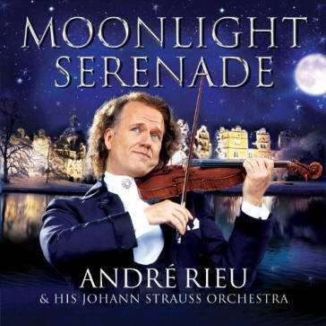

June 21 - 2011
Write/View comments (3) - Email to a friend - Jump to top
Dear André fans,
Today, 21st of June 2011, I have decided to close the doors of New Zealand fans of André Rieu. As you may have noticed, I have not updated the website for quite a while, primarily because there is not much NZ related André news and I just don't have the time to keep searching and updating it anymore.
First off, thanks goes to Sue from the Harmony Parlor, Ineke & Ruud from AndreRieu-Movies & Jeanine Ann from AndreRieuFans. Thanks for your help and support since the beginning of my website, I appreciate it all.
Secondly, a big thanks to all the André fans who have visited the website - you all truly made the website what it is! It was also lovely to meet some of you at the Auckland concert this year and in 2009. So thanks! Also thanks to Geoff from Marbecks for advising me of the latest CDs and DVDs.
The website will remain online until Saturday 25th June (NZT) when I will take it offline. So be sure to bookmark the above links for all the latest André news!
Thanks to you all once again for being a part of this. I hope you all continue to listen to fantastic music!
Cheerio,
Reuben
Auckland Yesterday, Christchurch tomorrow!
May 7
- 2011
Write/View comments (0)
-
Email to a friend
- Jump to top
To those of you who are going to be in Christchurch tomorrow watching André's concert, you are in for a treat!!!! All of us here in Auckland had a marvelous time last night, it was truly an unforgettable evening.
So you all know, I'm seeking reports for both the Auckland concert and the Christchurch concert. So if you'd like to write one and send it in for me to publish, let me know! To start things off, I've just published a brief report on the Auckland concert, which can be viewed on the Reports & Photos page. ;-)
Below is a photo of us fans at the meet and greet before last nights concert. :-) Have fun at Christchurch!
Helpful Info for Auckland Show + Fan Dinner at
Vector
May 3
- 2011
Write/View comments (0)
-
Email to a friend
- Jump to top
Murray, who's been doing a marvelous
job of organising the meet and greet for the
Auckland concert fans, has just forwarded me an
email from Vector Arena with some helpful
information. I've copied and listed what I've deemed
important below.
--
GET READY FOR A
RIEU-TIFUL NIGHT!
We just know that you
André Rieu fans will be thrilled to finally see him
here at Vector Arena this Friday, May 6, 2011,
especially after last year's postponement. It
promises to be a fantastic show, with one online
reviewer saying of the current tour: "If you're one
of those people whose dictionary has pictures in it,
look up 'extravaganza' and André Rieu should be
there."
We want you to have a magical night here at Vector
Arena, so below we've put together some tips to help
you make the most of your time here. If you have a
question and don't find it answered below, check out
our website
www.vectorarena.co.nz or give us a call on
09-358-1250 and we'll be happy to help.
BISTRO
ARENA OPEN FROM 5PM
Vector Arena’s very own bar & bistro will be open
from 5.00 p.m. on Friday and will remain open until
Andre and the orchestra take the stage. Located to
the right of the main entrance doors, and serving a
menu of light meals alongside full bar service, the
Bistro is the perfect place to socialise with your
fellow Rieu fans or meet friends before the show.
Click here to see the Bistro Arena menu of tasty
snacks and meals.
EVENT
TIMINGS *
* Please note that timings are approximate, but Mr.
Rieu will take the stage promptly as listed so
please get to your seats in plenty of time. If you
enter late, you will be required to wait to be
ushered to your seat by our staff only between songs
and during applause so as not to disturb the
performance.
6.30 p.m. - Doors open
8.00 p.m. - André Rieu Part 1
9.00 p.m. - Intermission
9.20 p.m. - André Rieu Part 2
10.40 p.m. - Show concludes
SPECIAL
ASSISTANCE
If you or anyone in your party requires mobility
assistance within Vector Arena, please alert one of
our friendly staff members (in the green uniforms)
upon entry and they'll direct you to the lifts or
provide any other help you might require.
MERCHANDISE
Official tour merchandise will be on sale from the
following areas:
From 5.30 p.m. from the outside merchandise trailer,
From 6.30 p.m. inside by doors 11 & 19 (upstairs).
GETTING
THERE AND HOME AGAIN
By Car:
Please note that compulsory road closures will be in
place for this event to keep the area around the
arena uncongested and safe for pedestrians. A map of
the road closures is shown here. The designated safe
drop-off point is shown on the map below right
(click it for a larger version) and directions to it
are as follows:
NB If you need to drop passengers close to the
Arena, the designated area is on QUAY ST by our
pedestrian bridge/ramp:
Coming from State Highway 1 from the South, take the
16 East "Port" exit (429B-C). (If coming from the
North, it's Exit 426-B). Follow it to the bottom of
Grafton Gully and from there continue straight on
under the railway bridge, along The Strand until it
terminates at the intersection with Quay St./Tamaki
Drive. Turn left onto Quay St. and travel to the
drop-off point which is approximately 500 metres
along at the base of our footbridge/ramp. (You'll
see the MacDonalds/Mobil complex shortly before it,
and then the big Vector Arena banners on your left).
Coming from the central city, you will travel past
the Arena on your right and then you'll need to turn
right into the shops at the MacDonalds/Mobil complex
in order to turn around and approach the dropoff
from the right direction on Quay Street.(Try not to
miss this turning point as there is no right turn
all the way down onto Tamaki Drive.)
Parking:
There are a number of carparks near Vector Arena,
but they do fill up fairly fast, so it's best to
allow yourself plenty of time to get here. Tapora St
is the closest carpark, and Anzac Ave & Shortland St
are a short stroll away.
Walking:
If you plan to walk, we are a short, flat 15mins
from the CBD via Beach Road or the Waterfront.
By public transport:
The Britomart & Downtown Ferry terminal are a short,
flat 15 minute walk from Vector Arena.
Bus:
Regular timetabled services leave from Britomart
Transport Centre to destinations across Auckland.
Final services are in general between 11pm and
midnight. For specific service times please check by
using the
MAXX Journey Planner., or call Maxx on
09-366-6400 or 0800-10-30-80. For those staying on
in the city after the show, the NiteRider service
operates from 1.00 a.m. to 3.40 a.m.
The Beach Rd. stop on the Link bus route is
approximately 100m from the Arena. The Link runs 7
days a week with services every ten to 15 minutes
from 6am and 11.30pm
Train:
Final train services from Britomart Transport Centre
are as follows:
12.36 a.m. to Waitakere
12.10 a.m. to Papakura via Newmarket
11.40 p.m. to Papakura via Glen Innes
For earlier and specific service times please check
by using the
MAXX Journey Planner (or call MAXX on
09-366-6400 or 0800-10-30-80).
Ferry:
Final ferry services from Downtown are as follows:
11:35 p.m. to Half Moon Bay
11.10 p.m. to Bayswater
11:10 p.m. to Birkenhead
1.00 a.m. to Devonport
11:45 p.m. to Waiheke
7 Days to go!
April 29
- 2011
Write/View comments (0)
-
Email to a friend
- Jump to top
I hope you're all getting excited! There's one week left until André will be performing in Auckland, and then again in Christchurch. I know a few of you in the guestbook certainly are.
|
Photo taken in Oct 2009 as André arrived at Auckland Airport. |
I look forward to meeting some of you either at the Auckland concert or at the meet and greet. For those of you attending the Christchurch concert, Barbara & Kathy are trying to organize a meet and greet before (or after) the Christchurch concert. Check out the guestbook for more info on that.
Golly, I had better go and check what I'm going to wear!
Roll on next Friday!
Win Tickets to Auckland or Christchurch Show
Next Week
April
27
- 2011
Write/View comments (0)
-
Email to a friend
- Jump to top
If you've decided not to go to either the Auckland or the Christchurch concert due to money reasons, today could be your lucky day! Read on below.

I hope you've all been keeping well and are wrapping up warm in preparation for the colder months ahead.
I'm so excited to be coming back to New Zealand next week and playing in Auckland again and am absolutely thrilled to be able to also bring my show to Christchurch which has been through so much.
I also have a very special treat for you....I have a double pass to my Auckland show (May 6th) and a double pass to my Christchurch show (May 8th) to GIVEAWAY!!! All you have to do to go in the draw is email us at Infonz@umusic.com and tell us which show you'd like to go to, it's that easy! Good Luck!
With Love
Andre"
On a side note, check out this cool
video of André and The Seekers rehearsing. Thanks to
Dee & Murray for sharing this.
http://today.ninemsn.com.au/videoindex.aspx?videoid=4d178281-c3a3-44b9-84fc-c6b8070073fe
André Rieu Confirms Christchurch Show Will Go
Ahead
April
13
- 2011
Write/View comments (1)
-
Email to a friend
- Jump to top
The following is a press release from
Universal Music New Zealand (André's New Zealand
promoter).
--
|
The King
of Waltz, André Rieu, has confirmed that his
show scheduled to take place in Christchurch
on 8th May at CBS Canterbury Arena will
definitely be going ahead. |
Also, remember the meet and greet is on before the Auckland concert, we're still accepting new entries.
Not long to go now!!
Moonlight Serenade Released Today
April 11
- 2011
Write/View comments (0)
-
Email to a friend
- Jump to top
André's latest CD; "Moonlight Serenade" jumps onto store shelves today, so go out and treat yourself!
It's available at:
Marbecks for $26.99
The Warehouse for $21.99
MightyApe for $23.99
For more info about the CD, check out the post before this one.
Moonlight Serenade - New André CD on April 11
[Updated]
April 3
- 2011
Write/View comments (0)
-
Email to a friend
- Jump to top
I've just received word from a bird at Marbecks that a new André CD will be released in New Zealand on April 11th! Its called Moonlight Serenade, and features popular musical pieces such as "O Mio Babbino Caro" and "Tales From The Vienna Woods". Here is the CD's synopsis:
|
 |
|
The
musical maestro himself André Rieu is back
with his incredible new album 'Moonlight
Serenade'. |
Track list:
1. Gold and Silver Waltz
2. Barcarolle
3. Theme From Romeo and Juliet
4. My Love Song Should Be A Waltz
5. Vienna, City of Dreams
6. Roses From The South
7. Serenade
8. Andre (All the Stars came Out) Vocals: Judith
Durham
9. O Mio Babbino Caro
10. Lara's Theme
11. Romance (The Gadlfy)
12. Danube Love
13. Intermezzo (Cavalleria Rusticana)
14. Emperor Waltz
15. Fascher-Polonaise
16. Snow Waltz
17. Tales From The Vienna Woods
18. Auld Lang Syne
So far, it seems only Marbecks is stocking it at this point for $26.99. However, I have contacted The Warehouse and Mighty Ape and shall update if I hear anything :-)
On a side note, I know a lot of you are concerned about the integrity of the Christchurch concert. As far as I know, the concert will be going on as planned. On the CBS arena website, a press release dated the 17th of March says:
|
CBS Canterbury Arena sustained minor damage which has been repaired. Since 22 February the venue has supported Civil Defence needs and is also the temporary head office location of Vbase Ltd. The venue will reopen for normal business from Saturday 26 March. |
One can only assume that the concert will not be effected. Share your thoughts by posting a comment on this post or in the guest book.
Not long to go now!!
[UPDATE 5/4/11]: The Warehouse will be selling it for $21.99 ;-)
André's Christchurch Show Will Go On
March 10
- 2011
Write/View comments (7)
-
Email to a friend
- Jump to top
Many of you have been emailing me and writing in the guestbook about André's Christchurch show and whether it will be cancelled or go on as planned. Well according to the information on the CBS Canterbury Arena website, the arena will be officially reopening it's doors on March 15th. The website, which was updated on the 24th of February reads:
|
CBS Canterbury Arena sustained minor structural damage. This has been repaired as a priority to enable this facility to be available for Civil Defence needs if required. |
So I believe we can safely assume that the show will go on.
On a side note, remember that we are having a Meet & Greet afternoon tea at the Copthorne Hotel before the Auckland concert on May 6th. Anyone is welcome to attend! For more info click here.
Also, thanks to all of you who have posted kind messages for the Christchurch victims.
Thanks to Carolyn Smith for emailing me about the CBS arena.
Roll on May 6th and 8th! :-)
André Shocked by Chch Earthquake
February
24
- 2011
Write/View comments (0)
-
Email to a friend
- Jump to top
André Rieu reacted with horror this
morning to the news about the earthquake in
Christchurch. The Dutch violinist and conductor is
currently rehearsing at his studio in Maastricht,
for his upcoming tour of South Africa.
"I was really shocked when I heard the news and saw
the first images on television. What terrible
destruction. And the number of victims. It's really
awful. The thoughts of my whole family, and the
entire orchestra, are with the victims and the
survivors. Everyone hopes never to have to go
through something like this"
A tour has been scheduled for Australia and New
Zealand in May. This includes a concert in
Christchurch. However, André says it is much too
early to decide whether the concert there can go
ahead as planned.
"That's not something I'm thinking about right now.
That's something for a later stage. The most
important thing is caring for the victims and the
clearing of the enormous devastation. Whether or not
concerts can go ahead is not important right now. My
thoughts go out to the inhabitants of Christchurch"
André Rieu says.
--
The above is from
PR News Wire.
Hope all of you who have been affected by the
earthquake are ok! New Zealands' thinking of you.
WIN
Roses From The South DVD :-)
December
10
- 2010
Write/View comments (0)
-
Email to a friend
- Jump to top
 |
||||||||||||
|
||||||||||||

Roses From The South DVD Out Now
December
1
- 2010
Write/View comments (0)
-
Email to a friend
- Jump to top
Just a reminder that the new André Rieu DVD, Roses From The South, has been on sale since Monday.
|
|
 Themed
around Johan Strauss' famous waltz of the
same name, 'Roses From the South' sees André
venturing to the amazing sub-tropical
paradise island of Mainau, just off the
south shore of Germany.
Themed
around Johan Strauss' famous waltz of the
same name, 'Roses From the South' sees André
venturing to the amazing sub-tropical
paradise island of Mainau, just off the
south shore of Germany.To see the DVD tracklist and where to buy, check out it's DVD page. ;-)
André Rieu Makes Chart History
November
23
- 2010
Write/View comments (0)
-
Email to a friend
- Jump to top
Showman violinist André Rieu has
made chart history by reaching No.4 in the UK Pop
Charts with an album of waltz tunes, which has also
become the fastest-selling instrumental album of the
century so far!
'Moonlight Serenade' achieved record-breaking sales figures by going Gold within 24 hours of release.
Only three new releases, by Take That, Rihanna and Susan Boyle, have managed to chart higher than the violinist. The Dutch violinist-conductor fought off stiff competition from ‘The Boss’ Bruce Springsteen, Cheryl Cole, James Blunt and Katy Perry.
Gennaro Castaldo, a spokesman for
HMV said: "This musical phenomenon is quite unlike
anything else in the entertainment world. The rise
of André Rieu has been truly remarkable - and with
his new album likely to feature in the Christmas Top
10, he'll be a household name before long."
André Rieu and his Johann Strauss Orchestra have
confirmed a UK Arena Tour for April 2011. The
self-styled 'King of the Waltz' has also announced
plans to perform at the North Pole!
"People from each country will come and we will all
play and sing together to get attention for global
warming and the fact that the North Pole belongs to
us all. I would very much like for the polar bears
to waltz", says Rieu.
Special gloves are being designed to allow André and
the orchestra to play their instruments in sub-zero
temperatures and protect against hypothermia,
frostbite and reduced muscle flexibility.
--
Above article from
www.classicfm.co.uk
André Rieu Has Recovered!
November
23
- 2010
Write/View comments (0)
-
Email to a friend
- Jump to top
The following article is from Sue's
the Harmony Parlor, English translation by John, and
article sent from Ineke.
--
AMSTERDAM - November 20, 2010 André Rieu gave two
fabulous concerts in Brussels. The violin virtuoso
has recovered from an infection on his equilibrium,
which kept him from the stage since the beginning of
August.
"It was exciting and it's also so wonderful to be
back. The orchestra is excited. Logical, they were
in fear for their jobs." The 61 year old André Rieu
had become disabled because he was so dizzy that he
could not be on stage. And that, while the Limburg
virtuoso had never been sick! "It was an experience
I would rather not relive" he says wryly, then added
candidly, "I just now was a little light headed when
I looked up, but I could function very well. The
doctors say that the dizziness will pass. I feel
like I am reborn again."
Today, André and his orchestra drive to Frankfurt to
fly from there to Mexico. "The first three days we
are there is to get used to the altitude difference
and then we will let go. We need to get acclimated.
Last time the whole orchestra thought that we all
had it on our hearts. We did not think about the
effects of the thin air."
André will perform in four concerts in Mexico City:
"We spent a paltry sum of 1600 euro's on marketing.
And by then we were already sold out. We are in the
Auditoria, which can accommodate 10,000 people."
After Mexico follows America, Germany, Australia and
England. "And for the Christmas Concert we will be
in Hasselt. Who would like to join me in some fun in
the Netherlands ... at Pentecost we are in the
Amsterdam Arena. I'll make up all the missed
conviviality!"
Classical Music Becoming Quite Popular in Newcastle,
Australia
November
15
- 2010
Write/View comments (0)
-
Email to a friend
- Jump to top
Just a nice little article. :-) From
The Herald AU
--
MUSIC students had the chance to blow their own horn
at the Conservatorium of Music's annual open day in
Newcastle, Australia yesterday.

Students and visitors took part in a range of master
classes, workshops and demonstrations in instruments
ranging from the viola to the bassoon.
Community music coordinator Ian Cook said the violin
was making a comeback among school-age students
thanks to the popularity of André Rieu.
"The same thing happened 20 years ago with James
Galway and the flute," he said.
"Now we're seeing this resurgence in the strings,
which is fantastic."
Mr. Cook said the conservatorium was also putting
together a youth orchestra to capitalise on its
strong string and brass sections, and its early
childhood music programs were taking off.
"The idea of today was to show the community what
the conservatorium is actually doing," he said.
"Classical music in particular is doing quite well
in Newcastle."
André
Resumes Concert Tour After Being Ill
November
8
- 2010
Write/View comments (0)
-
Email to a friend
- Jump to top
Article from
allvoices.com. Good news indeed!
---
Maastricht, The Netherlands - André Rieu the "King
of the Waltz" is resuming his concert tour after a
period of illness. The Maestro fell sick after an
infection in his inner ear. The nausea and loss of
balance made him unable to start his planned tour
for the United Kingdom and Australia. But after
weeks of rest it seems all resolved and he and his
team of dedicated musicians are ready to take on the
big stage again. The start of the new tour
The Money Behind the Shows
André Rieu and his Johann Strauss Orchestra is a non
subsidized corporation and with the loss of the
planned tour all musicians were unemployed for the
time being, Rieu paid out his own pocket, hundreds
of thousands of Euros in salaries, a huge loss for
the corporation. André Rieu said last week: "happy
to see that all my musical friends are back on
board, and we are practicing everyday for the
planned tours. However we will perform less than
planned as I need my rest and more time to recover,
but we go full speed ahead to be close to our fans
soon again."
New Mayor Maastricht
Last week André Rieu and the orchestra played in the
studio for the new mayor of Maastricht, Onno Hoes.
Maastricht is a lively musical oriented city, and a
new mayor needs to learn about all the traditions
during his first weeks in office. Who better can
help the new mayor Onno Hoes to adapt to the
Maastricht musical heritage then the stehgeiger
himself. Some of the items were broadcasted on Dutch
national television.
André Rieu World Wide
André Rieu and the Johann Strauss Orchestra has
become one of Hollands most profitable musical
export products. Ever since Rieu and his quartet
started on a Carnival Monday on the Vrijthof in
Maastricht success was guaranteed. Now 25 years
later this well established musical ensemble travels
to all continents and performs close to 200 times
per year. Truck loads and plane loads full of music
equipment, stages, backdrops and scenery props
follow them wherever they travel. World wide their
musical performances have hearts beating faster when
the light and classical music by Johann Strauss is
performed. Chapeau to Rieu, as he stayed with the
Johann Strauss music ever since he started, his
ambition was with the carnavalesque and frivol
Strauss sounds. He never even tried to deviate from
this entertaining classical direction.
Ticket Refunds Issued Until November + Update on
Auckland Meet & Greet
October
6
- 2010
Write/View comments (0)
-
Email to a friend
- Jump to top
If you don't think you will be able to attend André's concerts on the newly announced May dates next year, you may be interested in getting a refund. Just make sure you get your refund by the beginning of November. Christchurch tickets must be returned by the second week of November, and Auckland tickets by the 24th of November. Hopefully though, not many of you will be getting refunds, as your tickets are indeed valid for next years concert :-).
|
|
|
New Concert Dates |

Also, Murray has rescheduled the Auckland Meet & Greet at the Copthorne for the same time on May 6th, 2011. Absolutely everybody is welcome to attend, just express your interest by filling out the form on the Meet & Greet page. It will be great to meet other NZ fans before the concert :-)
Thanks to Barbara H. for the heads up on the ticket refunds.